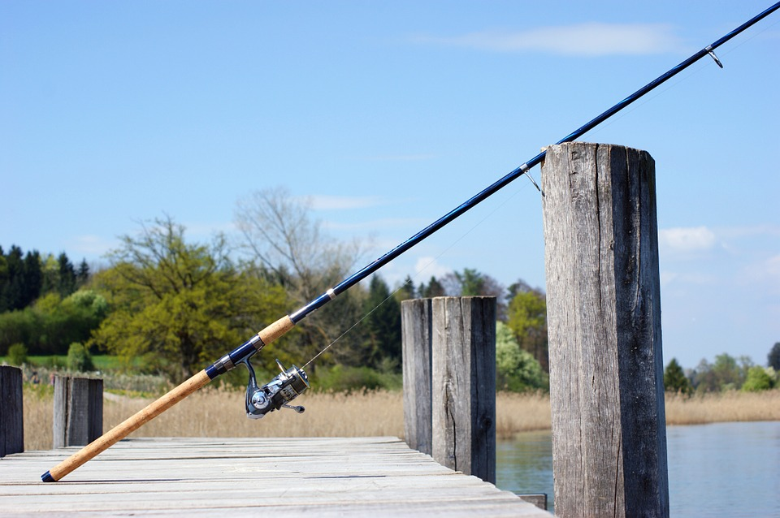
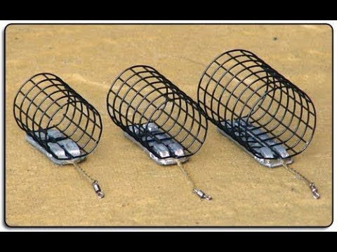
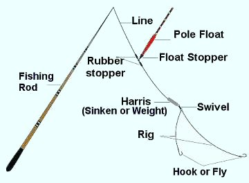

Spinning rods
Spinning rods are usually light and flexible, and they are used with spinning reels. Their rod guides face downward.
If you want to fish in the rivers or streams for trout, bass, and perch, spinning rods are recommended.
If you are interested in learning information about fishing rods. This video will provide some useful information. You can click on the fullscreen bottom if the frame is too small.
Spinning rods are usually light and flexible, and they are used with spinning reels. Their rod guides face downward.
If you want to fish in the rivers or streams for trout, bass, and perch, spinning rods are recommended.
Casting rods are equipped with a reel seat that put casting reels abouve the rod. Their rod guides face upward.
If you want to boat fishing in lakes or seas, casting rods can help you to handle bigger fish.

While spinning and casting rods use lures to pull a light line to the target location, fly rods use heavy lines to pull the light lures to the target location.
If you want to fish in fast-flowing water, fly fishing rods can help you catch salmon and trout.
Feeder rods are also known as quiver tip rods, because they come supplied with between one and three quiver tips. A feeder rod is used for fishing with bait on the bottom, without the use of a float, so are a great tool for carp fishing.
In Asia and Europe, people tend to use feeder rods because people like catching carp species.
You will need to attach a feeder on the fishing line, so the feeder can attract the fish. Large feeders obviously give you the chance to send out larger amounts of bait on each cast. Heavier weights will let you cast further on larger lakes but be sure to match the feeder weight with your rod. Rods with lighter action will struggle to cope with heavy feeders especially with the fine quiver tip ends. Heavier feeders will also stick better if you are fishing slopes on the lake bed and stop them from sliding your hookbait away from your baited swim.
Using a telescopic rod to fish is a popular method of catching fish. They made out of Graphite Carbon they are designed to bring strength sensitivity and flexibility to improve your comfort level.
These figures allow you to feel every movement and strike of the fish and fighting the biggest of fish with the lightest of tackle. They can't be used in the same manner as regular 2-3 piece rods, fighting and catching a big fish with them is different and more fun. You can never get this feeling and performance from rods made out of bamboo.
Telescopic rods are big, long and taper to a fine tip ended with strong Braid Lilian String connected to the tip. This string greatly enhances the sensitivity of the pole for detecting slightest strikes. Unlike spinning fishing rods, telescopic rods do not require reels. Only rod, line, float, weight and hook are used.